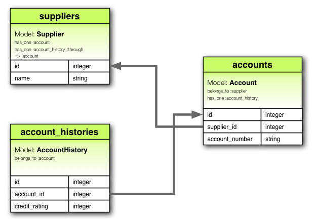

Tecnologías de Producción de Software

TTPS - Opcion Ruby por
Christian A. Rodriguez se encuentra bajo
una Licencia Creative Commons Atribución-NoComercial-CompartirIgual 3.0 Unported.


Ruby is designed to make programmers HAPPY


NombreDeClaseOModulo
CONSTANTE
@nombre_de_atributo
@@atributo_de_clase
$variable_global
nombre_de_metodo
metodo_peligroso!
metodo_que_pregunta?
Todos los valores son objetos
"Aprendiendo ruby".length
["Mateo", "Lola", "Lihue", "Clio"].sort
-100.abs
nil.nil?
1.object_id
nil.object_id
([1,2,3] + [4,5,6]).last
3
3.14
1_999_235_243_888 == 1999235243888
0b1000_1000 # Binario => 136
010 # Octal => 8
0x10 # Hexadecimal => 16
'sin interpolar'
"Interpolando: #{'Ja'*3}!"
# Otra forma de escribir un string
%q/Hola/
%q!Chau!
%Q{Interpolando: #{3+3}}
un_string = <<EOS
Este es un texto
de mas de una linea
que termina aqui
EOS
un_string.upcase
:action, :line_items, :+
:uno.object_id # siempre devolverá lo mismo
"uno".object_id # siempre devolverá diferente
['Hola', 'Chau']
%w(Hola Chau #{2+2}) # sin interpolar
%W(Hola Chau #{2+2}) # interpolando
[1,2,3,4]
# Versión 1.8
{
:nombre => 'Christian',
:apellido => 'Rodriguez'
}
# Versión > 1.8
{
nombre: 'Christian',
apellido: 'Rodriguez'
}
/^[a-zA-Z]+$/
Explicación detallada en Pickaxe
Para probar expresiones regulares puede usar Rubular
0..1
0..10
"a".."z"
"a"..."z"
# Pueden convertirse en arreglos
("a"..."z").to_a
# Rangos como intervalos
(1..10) === 5 # => true
(1..10) === 15 # => false
(1..10) === 3.1 # => true
uno = lambda { |n| n * 2 }
dos = ->(n, m){ n * 2 + m }
tres = ->(n, m=0){ n * 2 + m}
# Entonces
uno.call 2 # => 4
dos.call 2,3 # => 7
tres.call 2 # => 4
10 - 2
# Es equivalente a:
10.send :-, 2
# Operadores con arreglos
[1,2,3] - [1]
En Ruby toda expresión retorna un valor
a = 3.14 # => 3.14
# Veamos el case
estado = nil
face = case estado
when "Feliz" then ":)"
when "Triste" then ":("
else ":|"
end
def foo
"bar"
end
Su ejecución retorna "bar"
En versiones previas a la 2.0 retorna nil, en versiones superiores el símbolo con el nombre del método
Rara vez usaremos un for / while
3.times do |i|
puts i
end
# Imprime:
# 0
# 1
# 2
# Retorna 3 (que es quien recibe el método :times)
# También es posible
3.times { |i| puts i }
# Los pares
(1..10).select { |n| n.even? }
# o lo que es igual:
(1..10).select(& :even?)
# Procesando cada elemento
(1..10).map { |n| n*2 }
# o lo que es igual:
(1..10).collect { |n| n*2 }
(1..100).reduce { |sum,n| sum + n }
# o lo que es igual:
(1..100).reduce(:+)
# La formula de verificacion es: n*(n+1)/2
100*101/2
File.open('/etc/passwd').each do |line|
puts line if line =~ /root/
end
Si veo un pájaro que camina como pato, nada como pato y hace "cuack" como pato, entonces llamaré a ese pájaro un pato
public interface DuckLike {
Cuack cuack();
}
//...
public void doSomething(DuckLike d) {
d.cuack();
// ...
}
import java.lang.reflect.InvocationHandler;
import java.lang.reflect.InvocationTargetException;
import java.lang.reflect.Method;
import java.lang.reflect.Proxy;
public class DuckTyping {
interface Walkable { void walk(); }
interface Swimmable { void swim(); }
interface Quackable { void quack(); }
public static void main(String[] args) {
Duck d = new Duck();
Person p = new Person();
as(Walkable.class, d).walk(); //duck can walk()
as(Swimmable.class, d).swim(); //duck can swim()
as(Quackable.class, d).quack(); //duck can quack()
as(Walkable.class, p).walk(); //person can walk()
as(Swimmable.class, p).swim(); //person can swim()
// Gives Runtime Error
as(Quackable.class, p).quack(); //person can't quack()
}
@SuppressWarnings("unchecked")
static <T> T as(Class<T> t, final Object obj) {
return (T) Proxy.newProxyInstance(t.getClassLoader(),
new Class[] {t},
new InvocationHandler() {
public Object invoke(Object proxy,
Method method,
Object[] args) throws Throwable {
try {
return obj.getClass()
.getMethod(method.getName(),
method.getParameterTypes())
.invoke(obj, args);
} catch (NoSuchMethodException nsme) {
throw new NoSuchMethodError(
nsme.getMessage());
} catch (InvocationTargetException ite) {
throw ite.getTargetException();
}
}
});
}
}
class Duck {
public void walk() {
System.out.println("I'm Duck, I can walk...");
}
public void swim() {
System.out.println("I'm Duck, I can swim...");
}
public void quack() {
System.out.println("I'm Duck, I can quack...");
}
}
class Person {
public void walk() {
System.out.println("I'm Person, I can walk...");
}
public void swim() {
System.out.println("I'm Person, I can swim...");
}
public void talk() {
System.out.println("I'm Person, I can talk...");
}
}
class Duck
def quack
puts "Quaaaaaack!"
end
def feathers
puts "The duck has white and gray feathers."
end
end
class Person
def quack
puts "The person imitates a duck."
end
def feathers
puts "The person takes a feather from the ground"
end
end
def in_the_forest(duck)
duck.quack
duck.feathers
end
donald = Duck.new
john = Person.new
in_the_forest donald
in_the_forest john
(1..10).even # da error: even no existe
class Range
# Agregamos even a Range
def even
self.select(& :even?)
end
end
(1..10).even # ahora no da error
# => [2,4,6,8,10]
module MyAPI
class User
...
end
def self.configuration
...
end
end
user = MyAPI::User.new
puts MyAPI::configuration
Como las interfaces, pero con comportamiento
module MyLog
def log(msg)
puts "Log: #{msg}"
end
end
¿Cómo usar un mixin?
class String; include MyLog; end
"hola".log("pepe")
Muchas implementaciones
¿Cual usar?
¿Y si necesito o quiero usar más de 1?
Gemas
Bundler
cd para cambiar de versión de rubyLa instalación se realiza con git en el directorio ~/.rbenv
git clone https://github.com/sstephenson/rbenv.git ~/.rbenv
echo 'export PATH="$HOME/.rbenv/bin:$PATH"' >> ~/.bash_profile
# En ubuntu, hacer el `echo` en `.bashrc` en vez de `.bash_profile`
# Agregamos `rbenv init` al shell para habilitar el autocompletado
echo 'eval "$(rbenv init -)"' >> ~/.bash_profile
En ubuntu, hacer el echo en .bashrc en vez de .bash_profile
Debemos reiniciar el shell para que tome cambios
$ exec $SHELL -l
Con rbenv podemos seleccionar qué ruby usar. No instala ruby
Es necesario instalar ruby-build en el directorio ~/.rbenv/plugins
git clone https://github.com/sstephenson/ruby-build.git \
~/.rbenv/plugins/ruby-build
rbenv versions: muestra las versiones instaladas de ruby (con un * la versión actual)rbenv global: muestra o setea la versión global de rubyrbenv local: identico al comando anterior, pero para el directorio actualrbenv install: instala rubies! (con -l listamos todas las versiones disponibles)Luego de haber visto la Introducción a Ruby, ya conocemos un poco sobre la sintáxis de este lenguaje
Para entender mejor los objetos, vamos a hacerlo mediante un ejemplo tomado del libro Programming Ruby (Pick Axe)
Reventa de libros usuados que realiza control de stock semanalmente
Mediante lectores de códigos de barra se registra cada libro en las bibliotecas. Cada lector, genera un archivo separado por comas (CSV) que contiene una fila para cada libro registrado.
Cada fila contiene entre otros datos: ISBN del libro y precio. Un extracto del archivo sería:
"Date","ISBN","Amount"
"2008-04-12","978-1-9343561-0-4",39.45
"2008-04-13","978-1-9343561-6-6",45.67
"2008-04-14","978-1-9343560-7-4",36.95
Recordamos que los nombres de las clases deben comenzar con mayúsculas, los métodos con minúscula
class BookInStock
end
a_book = BookInStock.new
another_book = BookInStock.new
BookInStock. Podríamos decir en esta primer instancia que son el mismo libro, o iguales porque nada los distingue
Lo solucionamos obligando que la inicialización indique aquellos datos que distinga al libro
class BookInStock
def initialize(isbn, price)
@isbn = isbn
@price = Float(price)
end
end
initialize es especial en Ruby new, Ruby aloca memoria para alojar un objeto no
inicializado y luego invoca al método initialize pasándole cada parámetro
que fue enviado a new
initialize nos permite configurar el estado inicial de nuestros objetosinitialize:
initialize
@isbn e isbn están relacionadas, pero:
Float
toma un argumento y lo convierte a float, terminando el programa si falla
la conversiónAnalizar cómo es que Float es un método
b1 = BookInStock.new("isbn1", 3)
p b1
b2 = BookInStock.new("isbn2", 3.14)
p b2
b3 = BookInStock.new("isbn3", "5.67")
p b3
p porque imprime el estado interno de los objetos.to_s, que es enviado a cualquier objeto que necesita convertirse a string puts por defecto imprime:
#<nombre_de_clase:id_objeto_en_hex>
class BookInStock
def to_s
"ISBN: #{@isbn}, price: #{@price}"
end
end
BookInStock con el fin de agregar atributos
para isbn y price así podemos contabilizarlosclass BookInStock
def isbn
@isbn
end
def price
@price
end
end
accesor porque mapean
directamente con las variables de instancia
attr_reader
class BookInStock
attr_reader :isbn, :price
def initialize(isbn, price)
@isbn = isbn
@price = Float(price)
end
# ..
end
attr_reader no define variables de instancia
price=
class BookInStock
attr_reader :isbn, :price
def initialize(isbn, price)
@isbn = isbn
@price = Float(price)
end
def price=(new_price)
@price = new_price
end
# ...
end
book = BookInStock.new("isbn1", 33.80)
puts "ISBN = #{book.isbn}"
puts "Price = #{book.price}"
book.price = book.price * 0.75 # discount price
puts "New price = #{book.price}"
attr_writer provee acces de escritura únicamenteattr_accessor provee acceso R/Wclass BookInStock
attr_reader :isbn
attr_accessor :price
def initialize(isbn, price)
@isbn = isbn
@price = Float(price)
end
end
Agregamos el precio en centavos
class BookInStock
attr_reader :isbn
attr_accessor :price
def initialize(isbn, price)
@isbn = isbn
@price = Float(price)
end
def price_in_cents
Integer(price*100 + 0.5)
end
def price_in_cents=(cents)
@price = cents / 100.0
end
end
No hay correspondencia con variables de instancia como es el caso de price e isbn.
El mapeo es con price
CsvReader
class CsvReader
def initialize
# ...
end
def read_in_csv_data(csv_file_name)
# ...
end
def total_value_in_stock
# ...
end
def number_of_each_isbn
# ...
end
end
reader = CsvReader.new
reader.read_in_csv_data("file1.csv")
reader.read_in_csv_data("file2.csv")
# ......
# ......
puts "Total value in stock = #{reader.total_value_in_stock}"
CsvReader debe ir acumulando lo que va leyendo de cada csvrequire 'csv'
class CsvReader
def initialize
@books_in_stock = []
end
def read_in_csv_data(csv_file_name)
CSV.foreach(csv_file_name, headers: true) do |row|
@books_in_stock <<
BookInStock.new(row["ISBN"], row["Amount"])
end
end
end
read_in_csv_data indica la apertura del archivo
csv_file_name y el parámetro headers: true indica a la librería que la
primer línea del archivo son los encabezados de cada columna o campo
class CsvReader
# Luego veremos como usar inject...
def total_value_in_stock
sum = 0.0
@books_in_stock.each do |book|
sum += book.price
end
sum
end
end
book_in_stock.rb: la clase BookInStock
csv_reader.rb: el código de CsvReader
stock_stats.rb: el programa principalrequire y require_relative
stock_stats.rbrequire_relative 'csv_reader'
reader = CsvReader.new
ARGV.each do |csv_file_name|
STDERR.puts "Processing #{csv_file_name}"
reader.read_in_csv_data(csv_file_name)
end
puts "Total value = #{reader.total_value_in_stock}"
awk -F',' \
'begin {total = 0} {total += $3} END {print "total: " total}' \
csv_samples/*csv
Comprobación con AWK
self. Esto
significa que tampoco puede invocar el método privado de otra instancia de la
misma clase.class MyClass
def method # default is public
end
protected # subsequent methods will be 'protected'
def method2
end
private # subsequent methods will be 'private'
def method3
end
public # subsequent methods will be 'public'
def method4
end
end
class MyClass
def method1; end
def method2; end
def method3; end
def method4; end
public :method1, :method4
protected :method2
private :method3
end
Is a variable an object? In Ruby, the answer is no. A variable is simply a reference to an object. Objects float around in a big pool somewhere (the heap, most of the time) and are pointed to by variables.
Analicemos el siguiente ejemplo
person1 = "Tim"
person2 = person1
person1[0] = 'J'
puts "person1 is #{person1}"
puts "person2 is #{person2}"
dup
person1 = "Tim"
person2 = person1.dup
person1[0] = 'J'
puts "person1 is #{person1}"
puts "person2 is #{person2}"
Es posible freezar objetos
person1 = "Tim"
person2 = person1
person1.freeze
person2[0] = 'J'
arrayhash o arreglo asociativoArray mantiene una colección de referencias a objetos. a = [ 3.14159, "pie", 99 ]
a.class
a.length
a[0]
a[1]
a[2]
a[3]
b = Array.new
b.class
b.length
b[0] = "second"
b[1] = "array"
b
[]
[]
[] es un método (de instancia en la clase Array) y por tanto puede
implementarse por cualquier subclasenil
a = [ 1, 7, 9]
a[-1]
a[-2]
a[-99]
a = [ 1, 3, 5, 7, 9 ]
a[1, 3]
a[3, 1]
a[-3, 2]
Acceder arrays con dos valores indica [start,count] y retorna siempre un
nuevo array
a = [ 1, 3, 5, 7, 9]
a[1..3]
a[1...3]
a[3..3]
a[-3..-1]
.. se incluye el fin de rango... se excluye el extremo final[]=
[]= permite setear elementos de un array[]= se completa con nila = [ 1, 3, 5, 7, 9 ]
a[1] = 'bat'
a[-3] = 'cat'
a[3] = [ 9, 8 ]
a[6] = 99
[]=
Despejando las dudas con un ejemplo
a = [ 1, 3, 5, 7, 9 ]
a[2, 2] = 'cat'
a[2, 0] = 'dog'
a[1, 1] = [ 9, 8, 7 ]
a[0..3] = []
a[5..6] = 99, 98
Array
pushpopstack = []
stack.push "red"
stack.push "green"
stack.push "blue"
p stack
puts stack.pop
puts stack.pop
puts stack.pop
p stack
Array
unshiftshiftqueue = []
queue.push "red"
queue.push "green"
puts queue.shift
puts queue.shift
array = [ 1, 2, 3, 4, 5, 6, 7 ]
p array.first(4)
p array.last(4)
h = { 'dog' => 'canine', 'cat' => 'feline' }
h.length # => 2
h['dog'] # => "canine"
h['cow'] = 'bovine'
h[12] = 'dodecine'
h['cat'] = 99
En el ejemplo anterior se utilizan strings como claves
# En ruby >= 1.9
h = { dog: 'canine', cat: 'feline' }
# En ruby < 1.9
h = { :dog => 'canine', :cat => 'feline' }
Calcular el número de veces que aparece una palabra en un texto
def words_from_string(string)
string.downcase.scan(/[\w']+/)
end
Asumimos que counts es un Hash
if counts.has_key?(next_word)
counts[next_word] += 1
else
counts[next_word] = 1
end
Hash.new puede recibir como parámetro el valor usado para incializar cada
valor del Hash. (por ejemplo cuando se accede a un valor que no existe aún en
el Hash)
def count_frequency(word_list)
counts = Hash.new(0)
for word in word_list
counts[word] += 1
end
counts
end
Minitest
assert_equal que chequea si los dos parámetros
que se le envían son iguales, indicando fuertemente si así no
sucedeTesteamos words_from_string
require_relative 'words_from_string.rb'
require 'minitest/autorun'
class TestWordsFromString < Minitest::Test
def test_empty_string
assert_equal([], words_from_string(""))
assert_equal([], words_from_string(" "))
end
def test_single_word
assert_equal(["cat"], words_from_string("cat"))
assert_equal(["cat"], words_from_string(" cat "))
end
def test_many_words
assert_equal(["the", "cat", "sat", "on","the","mat"],
words_from_string("the cat sat on the mat"))
end
def test_ignores_punctuation
assert_equal(["the", "cat's", "mat"],
words_from_string("<the!> cat's, -mat...-"))
end
end
En esta clase, los métodos que comienzan con test serán corridos por el framework de testing
Testeamos count_frequency
require_relative 'count_frequency.rb'
require 'minitest/autorun'
class TestCountFrequency < Minitest::Test
def test_empty_list
assert_equal({}, count_frequency([]))
end
def test_single_word
assert_equal({"cat" => 1}, count_frequency(["cat"]))
end
def test_two_different_words
assert_equal({"cat" => 1, "sat" => 1},
count_frequency(["cat", "sat"]))
end
def test_two_words_with_adjacent_repeat
assert_equal({"cat" => 2, "sat" => 1},
count_frequency(["cat", "cat", "sat"]))
end
def test_two_words_with_non_adjacent_repeat
assert_equal({"cat" => 2, "sat" => 1},
count_frequency(["cat", "sat", "cat"]))
end
end
do y end
do / end
|
Suma de los cuadrados de los números en un arreglo
sum = 0
[1, 2, 3, 4].each do |value|
square = value * value
sum += square
end
puts sum
value
sum declarada fuera del bloque es actualizada dentro del bloquesum
square)# assume Shape defined elsewhere
square = Shape.new(sides: 4)
#
# .. lots of code
#
sum = 0
[1, 2, 3, 4].each do |value|
square = value * value
sum += square
end
puts sum
square.draw # BOOM!
No sucede lo mismo con los argumentos al bloque
value = "some shape"
[ 1, 2 ].each {|value| puts value }
puts value
Podemos solucionar el problema de square
square = "some shape"
sum = 0
[1, 2, 3, 4].each do |value; square|
square = value * value # different variable
sum += square
end
puts sum
puts square
yield
yield ruby invocará al código del bloque yield
def three_times
yield
yield
yield
end
three_times { puts "Hola" }
yield podemos enviarle un parámetro
def fib_up_to(max)
i1, i2 = 1, 1
while i1 <= max
yield i1
i1, i2 = i2, i1+i2
end
end
fib_up_to(1000) {|f| print f, " " }
class Array
def my_find
for i in 0...size
value = self[i]
return value if yield(value)
end
return nil
end
end
(1..200).to_a.my_find {|x| x%5 == 0}
(1..200).to_a.my_find {|x| x == 0}
Array hacen lo que hacen
mejor:
find), sería encontrar un elemento para el cual
el criterio sea verdaderoeach es el más simple
yield para cada elementocollect también conocido como map
yield para cada elemento. El resultado lo guarda en un nuevo
arreglo que es retornado
[ 1, 3, 5, 7, 9 ].each {|i| puts i }
['k','h','m','t','w'].collect {|x| x.succ }
f = File.open("testfile")
f.each { |line| puts "The line is: #{line}"}
f.close
Y si necesitamos el índice
f = File.open("testfile")
f.each_with_index do |line, index|
puts "Line #{index} is: #{line}"
end
f.close
[1,3,5,7].inject(0) {|sum, element| sum+element}
[1,3,5,7].inject {|sum, element| sum+element}
[1,3,5,7].inject(1) {|prod, element| prod*element}
[1,3,5,7].inject {|prod, element| prod*element}
Generando más mística para inject
[1,3,5,7].inject(:+)
[1,3,5,7].inject 100, :+
[1,3,5,7].inject(:*)
Enumerator
to_enum o enum_for
a = [ 1, 3, "cat" ]
h = { dog: "canine", fox: "lupine" }
# Create Enumerators
enum_a = a.to_enum
enum_h = h.to_enum
enum_a.next # => 1
enum_h.next # => [ :dog, "canine" ]
enum_a.next # => 3
enum_h.next # => [ :fox, "lupine" ]
Si un iterador se utiliza sin bloque, entonces retorna un Enumerator
a = [1,2,3].each
a.next
loop terminará cuando el Enumerator se quede sin valoresloop { puts "Hola" }
i=0
loop do
puts i += 1
break if i >= 10
end
short_enum = [1, 2, 3].to_enum
long_enum = ('a'..'z').to_enum
loop { puts "#{short_enum.next} - #{long_enum.next}" }
Sabemos que es posible usar each_with_index en Array
result = []
[ 'a', 'b', 'c' ].each_with_index do |item, index|
result << [item, index]
end
¿Y si queremos hacer lo mismo con un String?
each_with_index en String
each_char que es como each de Array pero sobre cada
caracter del string
Enumerator
Enumerable define el método each_with_index
result = []
"cat".each_char.each_with_index do |item, index|
result << [item, index]
end
# Aun más simple:
result = []
"cat".each_char.with_index do |item, index|
result << [item, index]
end
yield
yield
Los enumerators creados de esta forma permiten generar secuencias infinitas
fibonacci = Enumerator.new do |caller|
i1, i2 = 1, 1
loop do
caller.yield i1
i1, i2 = i2, i1+i2
end
end
6.times { puts fibonacci.next }
Como Enumerator es Enumerable sería posible:
fibonacci.first(1000).last
count y select tratarán de
leer todos los elementos antes de retornar un valor
select adecuada a nuestra lista
infinitadef infinite_select(enum, &block)
Enumerator.new do |caller|
enum.each do |value|
caller.yield(value) if block.call(value)
end
end
end
p infinite_select(fibonacci) {|val| val % 2 == 0}.first(5)
infinite_select directamente en la clase
Enumerator
class Enumerator
def infinite_select(&block)
Enumerator.new do |caller|
self.each do |value|
caller.yield(value) if block.call(value)
end
end
end
end
p fibonacci.
infinite_select {|val| val % 2 == 0}.
infinite_select {|val| val.to_s =~ /13\d$/ }.
first(2)
class File
def self.open_and_process(*args)
f = File.open(*args)
yield f
f.close()
end
end
File.open File.open
*args que significa:
tomar todos los argumentos enviados al método actual y colocarlos en un
arreglo llamado args
File.open(*args). Utilizar *args vuelve a expandir los
elementos del arreglo a parámetros individualesclass File
def self.my_open(*args)
result = file = File.new(*args)
if block_given?
result = yield file
file.close
end
return result
end
end
Esta técnica es tan útil, que File.open ya lo implementa. Además de usar File.open
para abrir un archivo, podemos usarlo para directamente procesarlo como lo hacíamos
con open_and_process
class ProcExample
def pass_in_block(&action)
@stored_proc = action
end
def use_proc(parameter)
@stored_proc.call(parameter)
end
end
eg = ProcExample.new
eg.pass_in_block { |param| puts "The parameter is #{param}" }
eg.use_proc(99)
call invoca la ejecución del bloque def create_block_object(&block)
block
end
bo = create_block_object do |param|
puts "You called me with #{param}"
end
bo.call 99
bo.call "cat"
lamda y Proc.new toman un bloque y retornan un objetoProc
lambda y Proc.new la veremos más adelante, pero ya
hemos mencionado que lambda controla los parámetros que requiere el
bloque, mientras que Proc no lo hacedef n_times(thing)
lambda {|n| thing * n }
end
p1 = n_times(10)
p1.call(3)
p1.call(4)
p2 = n_times("Hola ")
p2.call(3)
n_times referencia el parámetro thing que es usado por el bloquecall (y por ende en la ejecución del bloque) el
parámetro thing está fuera del alcance, el parámetro se mantiene accesible
dentro del bloquedef what_do_i_do?
value = 1
lambda { value += value }
end
let_me_see = what_do_i_do?
let_me_see.call
let_me_see.call
A partir de ruby 1.9
lambda { |params| ... }
# es equivalente a
->params { ... }
# Y con parámetros
proc1 = -> arg {puts "proc1:#{arg}" }
proc2 = -> arg1, arg2 {puts "proc2:#{arg1} y #{arg2}" }
proc3 = ->(arg1, arg2) {puts "proc3:#{arg1} y #{arg2}" }
proc1.call "ant"
proc2.call "bee", "cat"
proc3.call "dog", "elk"
Reimplementamos un while usando bloques
def my_while(cond, &body)
while cond.call
body.call
end
end
a = 0
my_while -> { a < 3 } do
puts a
a += 1
end
proc1 = lambda do |a, *b, &block|
puts "a = #{a.inspect}"
puts "b = #{b.inspect}"
block.call
end
proc1.call(1, 2, 3, 4) { puts "in block1" }
proc2 = -> a, *b, &block do
puts "a = #{a.inspect}"
puts "b = #{b.inspect}"
block.call
end
proc2.call(1, 2, 3, 4) { puts "in block2" }
Para entender por qué funciona:
[1,2,3].inject &:+
o = Object.new
[1,2,3].inject &o
# Esto da un error: TypeError: wrong argument type Object (expected Proc)
Que se soluciona con:
class Object
def to_proc
Proc.new {}
end
end
Analizando entonces lo que sucedió inferimos que la clase Symbol implementa
#to_proc de la siguiente forma:
class Symbol
def to_proc
lambda { |obj| obj.send(self) }
end
end
El ejemplo [1,2,3].map &:to_s ¡funciona perfecto!
Pero no funciona [1,2,3].inject &:+
Tratamos de solucionar la implementación anterior:
class Symbol
def to_proc
lambda { |obj, args| obj.send(self, *args) }
end
end
El ejemplo [1,2,3].inject &:+ ¡funciona pefecto!
Pero no funciona [1,2,3].map &:to_s
La solución a ambos problemas:
class Symbol
def to_proc
lambda { |obj, args=nil| obj.send(self, *args) }
end
end
class Parent
def say_hello
puts "Hello from #{self}"
end
end
p = Parent.new
p.say_hello
# Subclass the parent...
class Child < Parent
end
c = Child.new
c.say_hello
El método superclass devuelve la clase padre
puts "The superclass of Child is #{Child.superclass}"
puts "The superclass of Parent is #{Parent.superclass}"
puts "The superclass of Object is #{Object.superclass}"
Object
to_s está definido aquíBasicObject es utilizado en metaprogramación.
nil
GServer es un servidor TCP/IP genérico/var/log/syslog
serve
serve
require 'gserver'
class LogServer < GServer
def initialize
super(12345)
end
def serve(client)
client.puts get_end_of_log_file
end
private
def get_end_of_log_file
File.open("/var/log/syslog") do |log|
# back up 1000 characters from end
log.seek(-1000, IO::SEEK_END)
# ignore partial line
log.gets
# and return rest
log.read
end
end
end
server = LogServer.new
server.start.join
GServer ya no es parte del ruby core. Debe instalarse con gem install gserver
Descargar ejemplo
LogServer hereda de GServer
initialize
super
super, Ruby envía el método a la clase padre del objeto
actual, indicando que invoque el mismo método que se está ejecutando en el
hijo. Se enviarán los parámetros que fueron pasados a super
serve es algo común en OO
Veremos más adelante que esta práctica muy común en OO no la convierte en un buen diseño
En su lugar veremos mixins
Pero para explicar mixins, antes tenemos que explicar módulos
module Trig
PI = 3.141592654
def self.sin(x)
# ..
end
def self.cos(x)
# ..
end
end
module Moral
VERY_BAD = 0
BAD = 1
def self.sin(badness)
# ...
end
end
y = Trig.sin(Trig::PI/4)
wrongdoing = Moral.sin(Moral::VERY_BAD)
self.cos
module Debug
def who_am_i?
"#{self.class.name}(\##{self.object_id}):#{self.to_s}"
end
end
class Phonograph
include Debug
def initialize(n); @n=n; end
def to_s; @n; end
end
class EightTrack
include Debug
def initialize(n); @n=n; end
def to_s; @n; end
end
ph = Phonograph.new("West End Blues")
et = EightTrack.new("Surrealistic Pillow")
ph.who_am_i?
et.who_am_i?
include en Ruby agrega una referencia al módulo que agregará nuevos
métodos a nuestra claseComparable
<, <=, ==, >=, >
between?
<=>
class Person
include Comparable
attr_reader :name
def initialize(name)
@name = name
end
def to_s
"#{@name}"
end
def <=>(other)
self.name <=> other.name
end
end
p1 = Person.new("Matz")
p2 = Person.new("Guido")
p3 = Person.new("Larry")
[p1, p2, p3].sort
each, include?,
find_all?
Enumerable
each
<=> entonces
dispondremos de:
minmax sort Creamos nuestra clase Enumerable
class VowelFinder
include Enumerable
def initialize(string)
@string = string
end
def each
@string.scan(/[aeiou]/i) do |vowel|
yield vowel
end
end
end
vf = VowelFinder.new "El murcielago tiene todas"
vf.inject(:+)
Lo mismo hacemos con otras colecciones
[ 1, 2, 3, 4, 5 ].inject(:+)
( 'a'..'m').inject(:+)
module Summable
def sum
inject(:+)
end
end
Lo aplicamos a las clases del ejemplo
class Array; include Summable; end
class Range; include Summable; end
class VowelFinder; include Summable; end
[ 1, 2, 3, 4, 5 ].sum
('a'..'m').sum
vf.sum
module Observable
def observers
@observer_list ||= []
end
def add_observer(obj)
observers << obj
end
def notify_observers
observers.each {|o| o.update }
end
end
module MyModule
def test
"Module"
end
end
class Parent
def test
"Parent"
end
end
class Child < Parent
include MyModule
def test
"Child"
end
end
t = Child.new
p t.test
module MyModule
def test
"Module"
end
end
class Parent
def test
"Parent"
end
end
class Child < Parent
include MyModule
end
t = Child.new
p t.test
module MyModule
def test1
"Module"
end
end
class Parent
def test
"Parent"
end
end
class Child < Parent
include MyModule
end
t = Child.new
p t.test
'1' + '2' => '12'
1 + 2 # => 3
1 + 2.0 # => 3.0
1.0 + 2 # => 3.0
1.0 + Complex(1,2) # => (2.0,2i)
1 + Rational(2,3) # => (5/3)
1.0 + Rational(2,3) # => 1.66666666666665
# Y cuando se divide:
1.0/2 # => 0.5
1/2.0 # => 0.5
1/2 # => 0
Probar la división requiriendo mathn
US-ASCII en
1.9 y UTF-8 a partir de ruby 2#encoding: xxxx donde xxx corresponde a la codificación#encoding: iso-8859-1
txt = "dog"
puts "Encoding of #{txt.inspect} is #{txt.encoding}"
min, max, include, etc100.times {|x| p x if x==50 .. x==55 }
while line = gets
puts line if line =~ /start/ .. line =~ /end/
end
car_age = gets.to_f # let's assume it's 5.2
case car_age
when 0...1
puts "Mmm.. new car smell"
when 1...3
puts "Nice and new"
when 3...6
puts "Reliable but slightly dinged"
when 6...10
puts "Can be a struggle"
when 10...30
puts "Clunker"
else
puts "Vintage gem"
end
car_age = gets.to_f # let's assume it's 5.2
case car_age
when 0..0
puts "Mmm.. new car smell"
when 1..2
puts "Nice and new"
when 3..5
puts "Reliable but slightly dinged"
when 6..9
puts "Can be a struggle"
when 10..29
puts "Clunker"
else
puts "Vintage gem"
end
?
!
=
def concat(a="a", b="b")
"#{a},#{b}"
end
def surround(word, pad_width=word.length/2)
"[" * pad_width + word + "]" * pad_width
end
* antes del nombre del argumento, luego de los parámetros normales logramos este efecto
def varargs(arg1, *rest)
"arg1=#{arg1}. rest=#{rest.inspect}"
end
super
super, entonces se invoca el método del
padre con todos los argumentos que se hayan recibidoclass Child < Parent
def do_something(*not_used)
# our processing
super
end
end
O en forma similar
class Child < Parent
def do_something(*)
# our processing
super
end
end
return para forzar la salida
return se retorna un arreglodef five(a, b, c, d, e)
"I was passed #{a} #{b} #{c} #{d} #{e}"
end
five(1, 2, 3, 4, 5 )
five(1, 2, 3, *['a', 'b'])
five(*['a', 'b'], 1, 2, 3)
five(*(10..14))
five(*[1,2], 3, *(4..5))
Al igual que en el caso anterior de splat, podemos necesitar especificar que uno de los parámetros a un método es un bloque
## En vez de
(1..10).collect { |x| x*2}.join(',')
## Podemos usar
b = -> x { x*2}
(1..10).collect(&b).join ','
class SongList
def search(name, params)
# ...
end
end
list.search(:titles,
{ :genre => "jazz",
:duration_less_than => 270
})
{}, además de la posible
confusión con la posibilidad de que se esté indicando un bloqueclave => valor en la lista de
argumentos siempre que:
# Ruby <= 1.9
list.search(:titles,
:genre => 'jazz',
:duration_less_than => 270)
# Ruby >= 1.9
list.search(:titles, genre: 'jazz', duration_less_than: 270)
Asumimos un supuesto método log
def log(msg, level: "ERROR", time: Time.now)
puts "#{ time.ctime } [#{ level }] #{ msg }"
end
## En Ruby 1.9 teníamos que:
def log(msg, opt = {})
level = opt[:level] || "ERROR"
time = opt[:time] || Time.now
puts "#{ time.ctime } [#{ level }] #{ msg }"
end
log("Hello!", level: "INFO")
Caeríamos en:
def log(*msgs)
opt = msgs.last.is_a?(Hash) ? msgs.pop : {}
level = opt.key?(:level) ? opt.delete(:level) : "ERROR"
time = opt.key?(:time ) ? opt.delete(:time ) : Time.now
raise "unknown keyword: #{ opt.keys.first }" if !opt.empty?
msgs.each {|msg| puts "#{ time.ctime } [#{ level }] #{ msg }" }
end
Pero nos gustó preservar la primer versión del ejemplo
Probamos los argumentos
log("Hello")
log("Hello!", level: "ERROR", time: Time.now)
Y si cambiamos el orden
log("Hello!", time: Time.now, level: "ERROR")
log(level: "ERROR", time: Time.now, "Hello!")
Cuando enviamos un argumento no conocido
log("Hello!", date: Time.new)
** para explícitamente agrupar el resto de los keyword
arguments en un hash (como splat)Veamos como quedaría
def log(msg, level: "ERROR", time: Time.now, **kwrest)
puts "#{ time.ctime } [#{ level }] #{ msg }"
end
log("Hello!", date: Time.now)
Todos los casos
def f(a, b, c, m = 1, n = 1, *rest, x, y, z, k: 1,
**kwrest, &blk)
puts "a: %p" % a
puts "b: %p" % b
puts "c: %p" % c
puts "m: %p" % m
puts "n: %p" % n
puts "rest: [%p]" % rest.join(',')
puts "x: %p" % x
puts "y: %p" % y
puts "z: %p" % z
puts "k: %p" % k
puts "kwrest: %p" % kwrest
puts "blk: %p" % blk
end
f("a", "b", "c", 2, 3, "foo", "bar", "baz", "x",
"y", "z", k: 42, u: "unknown") { }
a, b, c = 1, 2, 3
a * b + c
# O en forma similar
(a.*(b)).+(c)
Podemos redefinirlos incluso
class Fixnum
alias old_plus +
def +(other)
old_plus(other).succ
end
end
Otro ejemplo con <<
class ScoreKeeper
def initialize
@total_score = 0
@count = 0
end
def <<(score)
@total_score += score
@count += 1
self
end
def average
fail "No scores" if @count == 0
Float(@total_score) / @count
end
end
scores = ScoreKeeper.new
scores << 10 << 20 << 40
puts "Average = #{scores.average}"
Incluso con []
class SomeClass
def []=(*params)
value = params.pop
puts "Indexed with #{params.join(', ')}"
puts "value = #{value.inspect}"
end
end
s = SomeClass.new
s[1] = 2
s['cat', 'dog'] = 'enemies'
Podemos usar comillas: ` ó %x para indicar la ejecución de un comando en el
sistema operativo subyacente
`date`
`ls`.split[34]
%x{echo "Hello there"}
`ip address ls`.
split("\n").
select {|x| x =~ / inet / }.
map do |x|
x.scan(/((\d{1,3}\.?){4}\/(\d){1,2})/).flatten.shift
end
Jugando con splat y asignación en paralelo
a, b, c, d, e = *(1..2), 3, *[4, 5] # a=1, b=2, c=3, d=4, e=5
a1, *b1 = 1, 2, 3 # a1=1, b1=[2, 3]
a2, *b2 = 1 # a2=1, b2=[]
*a3, b3 = 1, 2, 3, 4 # a3=[1, 2, 3], b3=4
c, *d, e = 1, 2, 3, 4 # c=1, d=[2,3], e=4
f, *g, h, i, j = 1, 2, 3, 4 # f=1, g=[], h=2, i=3, j=4
&& y el método and funcionan similar
and es de menor precedencia que &&
nil && 99 # => nil
false && 99 # => false
"cat" && 99 # => 99
a = (true and false)
a = true and false # Check a, Why??
|| y el método or funcionan similar
or es de menor precedencia que ||
nil || 99 # => 99
false || 99 # => 99
"cat" || 99 # => "cat"
b = (false or true)
b = false or true # Check b, Why??
Es muy común utilizar la expresión: ||= para setear un valor si no fue
seteado:
var ||= "default value"
break: termina en forma inmediata al loop que se encuentra más próximo. El
control se devuelve a la sentencia siguiente al final del bloqueredo: repite la iteración actual sin evaluar la condición ni trayendo el
siguiente elemento si fuese un iteradornext: avanza hasta el final del bloque continuando con la siguiente
iteracióna = 0
while a < 20 do
a +=1
break if a == 10
p a
end
a = 0
while a < 20 do
a +=1
redo if a == 10
p a
end
# Y ahora?
a = 0
while a < 20 do
a +=1
redo if a == 20
p a
end
a = 0
while a < 20 do
a +=1
next if a == 10
p a
end
# Y ahora?
a = 0
while a < 20 do
a +=1
next if a == 20
p a
end
Exception se propagará hacia arriba en la pila de ejecución hasta
que el sistema detecte código que sepa manejar dicha excepciónException Exception o con una clase propia que sea subclase de StandardError o alguna
de sus hijas. Analizamos el siguiente código
require 'open-uri'
web_page = open("http://pragprog.com/podcasts")
output = File.open("podcasts.html", "w")
while line = web_page.gets
output.puts line
end
output.close
Agregamos el manejador de excepción
require 'open-uri'
page = "podcasts"
file_name = "#{page}.html"
web_page = open("http://pragprog.com/#{page}")
output = File.open(file_name, "w")
begin
while line = web_page.gets
output.puts line
end
output.close
rescue Exception
STDERR.puts "Failed to download #{page}: #{$!}"
output.close
File.delete(file_name)
raise
end
$!
raise sin parámetros, que
relanza la excepción en $!
Exception
StandardError
ArgumentError
FiberError (1.9)
IndexError
KeyError (1.9)
StopIteration (1.9)
IOError
EOFError
LocalJumpError
NameError
NoMethodError
RangeError
FloatDomainError
RegexpError
RuntimeError
SystemCallError
system-dependent exceptions (Errno::xxx)
ThreadError
TypeError
ZeroDivisionError
fatal
NoMemoryError
ScriptError
LoadError
NotImplementedError
SyntaxError
SecurityError
SignalException
Interrupt
SystemExit
SystemStackError
rescue para un bloque begin
rescue puede incluso indicar varias excepciones a catchearrescue, podemos indicar el nombre de la variable que
usaremos para mapear la exepción (en vez de usar $!)begin
eval string
rescue SyntaxError, NameError => boom
print "String doesn't compile: " + boom
rescue StandardError => bang
print "Error running script: " + bang
end
rescue utilizar, es similar al caso de un case
rescue compara la excepción lanzada con cada uno de los parámetros
nombrados
parámetro == $!
StandardError
begin/end buscando en el
método que invocó un manejador para la misma, y así siguiendo hacia arriba en
la pilarescue, pero
podemos usar expresiones que retornen una subclase de Exception
ensure cumple esta funciónensure se ejecutará siempre, haya sido una ejecución exitosa
o con algún problemaf = File.open("testfile")
begin
# .. process
rescue
# .. handle error
ensure
f.close
end
else aplica cuando ninguno de los rescue manejan la excepciónensure ejecutará siempre, incluso cuando no se produce
un errorf = File.open("testfile")
begin
# .. process
rescue
# .. handle error
else
puts "Congratulations-- no errors!"
ensure
f.close
end
retry para volver a ejecutar el bloque
begin/end
@esmtp = true
begin
# First try an extended login. If it fails
# because the server doesn't support it,
# fall back to a normal login
if @esmtp then
@command.ehlo(helodom)
else
@command.helo(helodom)
end
rescue ProtocolError
if @esmtp then
@esmtp = false
retry
else
raise
end
end
Podemos lanzar excepciones usando el método Kernel.raise
raise
raise "bad mp3 encoding"
raise InterfaceException, "Keyboard failure", caller
RuntimeError si no.
Usualemnte dentro de rescue
RuntimeError con el mensaje indicadoKernel.caller genera la traza de ejecuciónraise
raise "Missing name" if name.nil?
if i >= names.size
raise IndexError, "#{i} >= size (#{names.size})"
end
raise ArgumentError, "Name too big", caller
Generalmente no se incluye la traza en librerías
throw(symbol, variable). En este ejemplo es importante que
el último puts retorna nil
word_list = File.open("wordlist")
word_in_error = catch(:done) do
result = []
while line = word_list.gets
word = line.chomp
throw(:done, word) unless word =~ /^\w+$/
result << word
end
puts result.reverse
end
if word_in_error
puts "Failed: '#{word_in_error}' found. Not a word"
end
Juan desarrolla una funcionalidad que tiene algún error no detectado. Unos dos meses después, desarrollamos determinada funcionalidad que, indirectamente utiliza lo que Juan ha desarrollado.
Cuando nuestro código no devuelve los resultados esperados, nos llevará un tiempo encontrar el problema dentro del código de Juan. Es entonces cuando consultamos con Juan:
¿Por qué encaraste la solución así?
y la respuesta inmediata será:
no recuerdo, fue hace varios meses
Los tests de unidad son simples:
consiste en correr un programa que invocan una parte del código de nuestra aplicación, obtiene algunos resultados y verifica que dichos resultados sean los esperados
Escribir una clase llamada Roman que permita crear objetos con un valor
numérico y que imprima el valor como un número romano
class Roman
MAX_ROMAN = 4999
def initialize(value)
if value <= 0 || value > MAX_ROMAN
fail "Roman values must be > 0 and <= #{MAX_ROMAN}"
end
@value = value
end
FACTORS = [["m",1000], ["cm",900], ["d",500], ["cd",400],
["c",100], ["xc",90], ["l",50], ["xl",40],
["x",10], ["ix",9], ["v",5], ["iv",4], ["i",1]]
def to_s
value = @value
roman = ""
for code, factor in FACTORS
count, value = value.divmod(factor)
roman << code unless count.zero?
end
roman
end
end
irb
require 'roman'
r = Roman.new(1)
fail "'i' expected" unless r.to_s == "i"
r = Roman.new(9)
fail "'ix' expected" unless r.to_s == "ix"
Pero Ruby ya incorpora un framework de tests de unidad:
Test::Unit era la opción de la mayor parte de los
desarrolladoresassertions de MiniTest se espejan con las
definidas en Test::Unit::TesCase
Aparecen dos opciones de uso:
require 'minitest/unit' similar a Test::Unitrequire 'minitest/spec' utiliza el formato de specs introducido por
rspec
if/unless se utilizan assertions que
provee el framework de testReescribimos los tests que hicimos con los dientes
require_relative 'roman'
require 'minitest/autorun'
require 'minitest/unit'
class TestRoman < MiniTest::Test
def test_simple
assert_equal("i", Roman.new(1).to_s)
assert_equal("ix", Roman.new(9).to_s)
end
end
Lo probamos
require_relative 'roman'
require 'minitest/autorun'
require 'minitest/unit'
class TestRoman < MiniTest::Test
def test_simple
assert_equal("i", Roman.new(1).to_s)
assert_equal("ii", Roman.new(2).to_s)
assert_equal("iii",Roman.new(3).to_s)
assert_equal("iv", Roman.new(4).to_s)
assert_equal("ix", Roman.new(9).to_s)
end
end
Lo probamos
Miramos el to_s
def to_s
value = @value
roman = ""
for code, factor in FACTORS
count, value = value.divmod(factor)
roman << (code * count)
# cambiamos: unless count.zero?
end
roman
end
Lo probamos
Para no repetir los asserts, podemos:
require_relative 'roman'
require 'minitest/autorun'
require 'minitest/unit'
class TestRoman < MiniTest::Test
NUMBERS = [
[ 1, "i" ], [ 2, "ii" ], [ 3, "iii" ],
[ 4, "iv"], [ 5, "v" ], [ 9, "ix" ]
]
def test_simple
NUMBERS.each do |arabic, roman|
r = Roman.new(arabic)
assert_equal(roman, r.to_s)
end
end
end
Podemos testear muchas cosas, por ejemplo el constructor de la clase Roman
require_relative 'roman'
require 'minitest/autorun'
require 'minitest/unit'
class TestRoman < MiniTest::Test
def test_range
# no exception for these two...
Roman.new(1)
Roman.new(4999)
# but an exception for these
assert_raises(RuntimeError) { Roman.new(0) }
assert_raises(RuntimeError) { Roman.new(5000) }
end
end
Analicemos qué más testear en la clase Roman que genera números hasta 4999
assert | refute(boolean, [ message ] )
# Fails if boolean is (is not) false or nil.
assert_block { block }
# Expects the block to return true.
assert_ | refute_empty(collection, [ message ] )
# Expects empty? on collection to return true (false).
assert_ | refute_equal(expected, actual, [ message ] )
# Expects actual to equal/not equal expected, using ==.
assert_ | refute_in_delta(expected_float, actual_float,
delta, [ message ] )
# Expects that the actual floating-point value is (is not)
# within delta of the expected value.
assert_ | refute_in_epsilon(expected_float, actual_float,
epsilon=0.001, [ message ] )
# Calculates a delta value as epsilon * min(expected, actual),
# then calls the _in_delta test.
assert_ | refute_includes(collection, obj, [ message ] )
# Expects include?(obj) on collection to return true (false).
assert_ | refute_instance_of(klass, obj, [ message ] )
# Expects obj to be (not to be) a instance of klass.
assert_ | refute_kind_of(klass, obj, [ message ] )
# Expects obj to be (not to be) a kind of klass.
assert_ | refute_match(regexp, string, [ message ] )
# Expects string to (not) match regexp.
assert_ | refute_nil(obj, [ message ] )
# Expects obj to be (not) nil.
assert_ | refute_operator(obj1, operator, obj2, [ message ] )
# Expects the result of sending the message operator to obj1
# with parameter obj2 to be (not to be) true.
assert_raises(Exception, . . . ) { block }
# Expects the block to raise one of the listed exceptions.
assert_ | refute_respond_to(obj, message, [ message] )
# Expects obj to respond to (not respond to) message (a symbol).
assert_ | refute_same(expected, actual, [ message ] )
# Expects expected.equal?(actual).
assert_send(send_array, [ message ] )
# Sends the message in send_array[1] to the receiver in
# send_array[0], passing the rest of send_array as arguments.
# Expects the return value to be true.
assert_throws(expected_symbol, [ message ] ) { block }
# Expects the block to throw the given symbol.
flunk(message="Epic Fail!")
# Always fails.
skip(message)
# Indicates that a test is deliberately not run.
pass
# Always passes.
Notar que el último parámetro es un mensaje que será usado en la salida ante un error.
Generalmente no es necesario usarlo porque el error es bastante claro, salvo refute_nil
que devolvería Expected nil to not be nil
Veamos ahora como sería el mismo último test escrito en este nuevo formato
require_relative 'roman'
require 'minitest/autorun'
require 'minitest/spec'
describe Roman do
NUMBERS = [ [ 1, "i" ], [ 2, "ii" ], [ 3, "iii" ],
[ 4, "iv"], [ 5, "v" ], [ 9, "ix" ] ]
describe 'when arbitrary numbers are converted' do
it 'must return expected value' do
NUMBERS.each do |arabic, roman|
r = Roman.new(arabic)
assert_equal(roman, r.to_s)
end
end
end
describe 'limits' do
it 'should not raise exceptions for these two' do
Roman.new(1)
Roman.new(4999)
end
it 'should raise an exception for limits' do
assert_raises(RuntimeError) { Roman.new(0) }
assert_raises(RuntimeError) { Roman.new(5000) }
end
end
end
Roman alcanza con un único
test case. Las clases que representan test cases, deben ser subclase de:
Minitest::Test
Generalmente queremos ejecutar determinado código antes y luego de cada test. Disponemos entonces de:
setup en Unit o before en Specteardown en Unit o after en SpecVer ejemplo minitest-spec y minitest-unit
Mocks
Coverage con simplecov
Es interesante seguir investigando sobre:
gem install rake
gem search sinatra
gem list
gem install bundler
Definimos las dependencias en el archivo Gemfile
source 'https://rubygems.org'
gem 'sinatra'
Luego instalamos las dependencias con bundle install o simplemente bundle
# Instalar dependencias:
bundle install
# Actualizar dependencias a sus últimas versiones:
bundle update
# Ejecutar un script en el contexto del bundle actual:
bundle exec
# Ver las gemas instaladas en el bundle actual:
bundle list
# Ver donde está ubicada una gema:
bundle show NOMBRE_GEMA
gem indica una dependencia y acepta los siguientes
parámetros:
'>= 1.1.0', '~> 3.1.2'
github: 'sinatra/sinatra'
source 'https://rubygems.org'
gem 'sinatra', github: 'sinatra/sinatra'
gem 'activerecord', '~> 3.1.0'
Gemfile no basta, hay que invocar a bundler.Bundler requiere los archivos
require 'bundler'
Bundler.require
Bundler configura, pero los require son explícitos
require 'bundler'
Bundler.setup
require 'sinatra'
La fuente de donde obtener las gemas: source 'https://rubygems.org'
Cómo se require la gema: usando require: 'string' o
require: false
Versión de una gema: >= x.y o ~> x.y.z
Tag, branch o ref de un repo git
Grupos de gemas con el fin de poder requerir o instalarlas en forma modular:
group: :development
Bundler.setup y Bundler.require
Plataforma para la cual aplican determinadas gemas: patforms:
[:jruby, :ruby]
source 'https://rubygems.org'
gem 'thin', '~>1.1'
gem 'rspec', :require => 'spec'
gem 'my_gem', '1.0', :source => 'https://gems.example.com'
gem 'mysql2', platform: :ruby
gem 'jdbc-mysql', platform: :jruby
gem 'activerecord-jdbc-adapter', platform: :jruby
source 'https://gems.example.com' do
gem 'another_gem', '1.2.1'
end
gem 'nokogiri',
:git => 'https://github.com/tenderlove/nokogiri.git',
:branch => '1.4'
gem 'extracted_library', :path => './vendor/extracted_library'
gem 'wirble', :group => :development
gem 'debugger', :group => [:development, :test]
group :test do
gem 'rspec'
end
GET /capacitacion-ruby-ttps/ HTTP/1.1
Host: ttps-ruby.github.io
Connection: keep-alive
Pragma: no-cache
Cache-Control: no-cache
Accept: text/html,application/xhtml+xml, application/xml;q=0.9,image/webp,*/*;q=0.8
User-Agent: Mozilla/5.0 (X11; Linux x86_64) AppleWebKit/537.36 (KHTML, like Gecko) Chrome/38.0.2125.104 Safari/537.36
Accept-Encoding: gzip,deflate,sdch
Accept-Language: es-ES,es;q=0.8
HTTP/1.1 200 OK
Server: GitHub.com
Content-Type: text/html; charset=utf-8
Last-Modified: Tue, 21 Oct 2014 02:06:17 GMT
Expires: Sun, 26 Oct 2014 23:05:15 GMT
Cache-Control: max-age=600
Content-Encoding: gzip
Content-Length: 78296
Accept-Ranges: bytes
Date: Sun, 26 Oct 2014 22:55:48 GMT
...........{..W.....UT.>.....$`...C.r ....L&.?.T.
...gN...k_......=.{../.g'..~.../.>..V......[_...Q
Curl es una librería empleada para interactuar con varios protocolos, especialmente HTTP
$ curl -X GET \
http://ttps-ruby.github.io/capacitacion-ruby-ttps/ -i
HTTP/1.1 200 OK
Server: GitHub.com
Content-Type: text/html; charset=utf-8
Last-Modified: Tue, 21 Oct 2014 02:06:17 GMT
Expires: Sun, 26 Oct 2014 23:36:24 GMT
Cache-Control: max-age=600
Content-Length: 281844
Accept-Ranges: bytes
Date: Sun, 26 Oct 2014 23:26:24 GMT
Via: 1.1 varnish
Age: 0
Connection: keep-alive
X-Served-By: cache-iad2134-IAD
X-Cache: MISS
X-Cache-Hits: 0
X-Timer: S1414365984.304589,VS0,VE7
Vary: Accept-Encoding
...
Creamos un directorio e inicializamos con bundle init
source 'https://rubygems.org'
gem 'sinatra'
require 'bundler'
Bundler.require
get '/' do
'hello world'
end
Asumiendo el server se guarda en el archivo server.rb,
ejecutamos: ruby server.rb
$ curl -v http://localhost:4567/
> GET / HTTP/1.1
> User-Agent: curl/7.35.0
> Host: localhost:4567
> Accept: */*
>
< HTTP/1.1 200 OK
HTTP/1.1 200 OK
< Content-Type: text/html;charset=utf-8
Content-Type: text/html;charset=utf-8
< Content-Length: 11
Content-Length: 11
< X-Xss-Protection: 1; mode=block
X-Xss-Protection: 1; mode=block
< X-Content-Type-Options: nosniff
X-Content-Type-Options: nosniff
< X-Frame-Options: SAMEORIGIN
X-Frame-Options: SAMEORIGIN
* Server WEBrick/1.3.1 (Ruby/2.1.2/2014-05-08) is not blacklisted
< Server: WEBrick/1.3.1 (Ruby/2.1.2/2014-05-08)
Server: WEBrick/1.3.1 (Ruby/2.1.2/2014-05-08)
< Date: Sun, 26 Oct 2014 23:35:04 GMT
rack-test
GET / y esperaremos que nos
devuelva un código de estado 200 (OK) y que el body sea 'hello world'
Como usamos bundler, editamos el Gemfile
source 'https://rubygems.org'
gem 'sinatra'
gem "minitest"
gem "rack-test"
require_relative 'server'
require 'minitest/autorun'
class HelloWorldTest < MiniTest::Test
include Rack::Test::Methods
def app
Sinatra::Application
end
def test_get_root
get '/'
assert_equal 200, last_response.status
assert last_response.ok?
assert_equal 'hello world', last_response.body
end
end
require_relative 'server'
require 'minitest/autorun'
require 'minitest/spec'
include Rack::Test::Methods
def app
Sinatra::Application
end
describe 'my example server' do
it 'should succeed' do
get '/'
last_response.status.must_equal 200
last_response.must_be :ok?
last_response.body.must_include 'hello world'
end
end
params o como un
parámetro del bloqueparams[:splat] o
parámtros del bloque?some_param=value&other=other_value
require 'bundler'
Bundler.require
get '/' do
'This is GET'
end
post '/' do
'This is POST'
end
put '/' do
'This is PUT'
end
patch '/' do
'This is PATCH'
end
delete '/' do
'This is DELETE'
end
$ curl -X GET http://localhost:4567/
This is GET
$curl -d '' -X PUT http://localhost:4567/
This is PUT
$ curl -d '' -X POST http://localhost:4567/
This is POST
$ curl -d '' -X DELETE http://localhost:4567/
This is DELETE
$ curl -d '' -X PATCH http://localhost:4567/
This is PATCH
get '/hello/:name' do
# matches "GET /hello/foo" and "GET /hello/bar"
# params[:name] is 'foo' or 'bar'
"Hello #{params[:name]}!"
end
# O usando variables de bloque
get '/hello/:name' do |n|
# matches "GET /hello/foo" and "GET /hello/bar"
# params[:name] is 'foo' or 'bar'
# n stores params[:name]
"Hello #{n}!"
end
get '/say/*/to/*' do
# matches /say/hello/to/world
params[:splat] # => ["hello", "world"]
end
get '/download/*.*' do
# matches /download/path/to/file.xml
params[:splat] # => ["path/to/file", "xml"]
end
# O usando variales de bloque
get '/download/*.*' do |path, ext|
[path, ext] # => ["path/to/file", "xml"]
end
get %r{/hello/([\w]+)} do
"Hello, #{params[:captures].first}!"
end
# O usando variables de bloque
get %r{/hello/([\w]+)} do |c|
"Hello, #{c}!"
end
get '/posts' do
# matches "GET /posts?title=foo&author=bar"
title = params[:title]
author = params[:author]
end
agent: condiciones sobre el UAprovides: condiciones sobre el content typehost_name: condiciones sobre el server nameget '/foo', :agent => /Songbird (\d\.\d)[\d\/]*?/ do
"You're using Songbird version #{params[:agent][0]}"
end
get '/foo' do
# Matches non-songbird browsers
end
¿Cómo probar?
curl http://localhost:4567/foo -A 'Songbird 1.1'
get '/', :host_name => /^admin\./ do
"Admin Area, Access denied!"
end
get '/', :provides => 'html' do
'HTML'
end
get '/', :provides => ['rss', 'atom', 'xml'] do
'XML'
end
¿Cómo probar?
curl http://localhost:4567 -H "Accept: application/xml"
set(:probability) do |value|
condition { rand <= value }
end
get '/win_a_car', :probability => 0.1 do
"You won!"
end
get '/win_a_car' do
"Sorry, you lost."
end
set(:auth) do |*roles| # <- notice the splat here
condition do
unless logged_in? &&
roles.any? {|role| current_user.in_role? role }
redirect "/login/", 303
end
end
end
get "/my/account/", :auth => [:user, :admin] do
"Your Account Details"
end
get "/only/admin/", :auth => :admin do
"Only admins are allowed here!"
end
public.
set :public_folder, File.dirname(__FILE__) + '/static'
views
get '/' do
@name = 'Frank Sinatra'
erb :index
end
El archivo views/index.erb
<html>
<head>
<title>Welcome</title>
</head>
<body>
Hello, <%= @name %>!
</body>
</html>
settings.default_encoding
settings.views
Continúa
set :views, settings.root + '/templates'
Es importante recordar que los templates deben referenciarse siempre con
símbolos, aun si se encuentran en un subdirectorio (en este caso usar:
:subdir/template o 'subdir/template'.to_sym). Debe siempre usarse un símbolo
sino se toma el string y renderiza directamente.
yield
get '/template' do
@name='Some name'
erb :sample
end
El código anterior, buscará el layout views/layout.erb y el template views/sample.erb
Los filtros before son evaluados antes de cada petición
dentro del mismo contexto que las rutas. Pueden modificar la petición y la
respuesta. Las variables de instancia asignadas en los filtros son accesibles
por las rutas y las plantillas (idem con after):
before do
@nota = 'Hey!'
end
get '/' do
@nota #=> 'Hey!'
end
after ejecuta luego de atender la peticiónbefore '/protected/*' do
authenticate!
end
after '/create/:slug' do |slug|
session[:last_slug] = slug
end
before :agent => /Songbird/ do
# ...
end
after '/blog/*', :host_name => 'example.com' do
# ...
end
Son métodos que pueden ser usados en los bloques de rutas y los templates.
helpers do
def bar(name)
"#{name}bar"
end
end
get '/:name' do
"#{bar params[:name]}"
end
Una sesión es usada para mantener el estado a través de distintas peticiones. Cuando están activadas, proporciona un hash de sesión para cada sesión de usuario:
enable :sessions
get '/' do
"value = " << session[:value].inspect
end
get '/:value' do
session[:value] = params[:value]
end
Podés redireccionar al navegador con el método redirect:
get '/foo' do
redirect to('/bar')
end
get '/bar' do
'Hello!'
end
Los manejadores de errores se ejecutan dentro del mismo contexto que las rutas y los filtros before, lo que significa que podés usar, por ejemplo, haml, erb, halt, etc.
not_found do
'Ruta no encontrada'
end
error do
# env['sinatra.error'] contains error
'Disculpá, ocurrió un error horrible'
end
RACK_ENV
configure do
# setting one option
set :option, 'value'
# setting multiple options
set :a => 1, :b => 2
# same as `set :option, true`
enable :option
# same as `set :option, false`
disable :option
# you can also have dynamic settings with blocks
set(:css_dir) { File.join(views, 'css') }
end
configure :production do
# Sólo aplica al ambiente :production
end
Lo valores seteados con set pueden accederse con settings
configure do
set :foo, 'bar'
end
get '/' do
settings.foo? # => true
settings.foo # => 'bar'
...
end
RACK_ENV
not_found y error son especiales dado que muestran el
stacktraceLa aplicación se inicia seteando la variable RACK_ENV de la siguiente forma:
RACK_ENV=production ruby my_app.rb
get '/' do
if settings.development?
"development!"
else
"not development!"
end
end
use
# Agregando al Gemfile gem 'rack-contrib'
require 'bundler'
Bundler.require
use Rack::Deflater
get '/hello' do
'Hello World'
end
Ahora las respuestas se comprimen con gzip
Active Record mapea automáticamente entre tablas y clases, atributos y columnas
class Product < ActiveRecord::Base
end
La clase Product se mapea automáticamente a la tabla llamada products, que
podría ser algo como:
CREATE TABLE products (
id int(11) NOT NULL auto_increment,
name varchar(255),
PRIMARY KEY (id)
);
Además se definen los siguientes accessors: Product#name y
Product#name=(new_name)
Ver ejemplo: notar que no funcionará si no existe la tabla creada
README
Book se mapea a books BookClub se mapeará a la tabla
book_clubs
+---------------+---------------+
| Model / Class | Table / Schema|
+---------------+---------------+
| Post | posts |
| LineItem | line_items |
| Deer | deers |
| Mouse | mice |
| Person | people |
+---------------+---------------+
nombre_en_singular_id (por ejemplo: item_id, order_id). Estos serán
los campos por los que Active Record buscará cuando se creen asociaciones entre
modelosid como clave primaria. Cuando se usan Migraciones de
Active Record para crear las tablas, esta columna se creará automáticamentecreated_at: esta columna automáticamente setea la fecha y hora cuando el
registro es creadoupdated_at: esta columna automáticamente setea la fecha y hora cuando el
registro es actualizadolock_version: agrega optimistic
locking al modelotype: especifica que el modelo utiliza Single Table
Inheritance
(association_name)_type: especifica el tipo de asociaciones
polimórifcas
(table_name_plural)_count: usado para cachear el número de registros que pertenecen
a una asociación. Por ejemplo, una columna comments_count en la clase Post que tiene muchas instancias de Comment, cacheará el número de comentarios existentes para cada post.ActiveRecord::Base.logger = Logger.new(STDOUT)
asociacion_en_plural_count y agregando un modificador a la asociación belongs_to llamado counter_cache: true
ActiveRecord::Base y listoclass Product < ActiveRecord::Base
end
p = Product.new
p.name = "Some Book"
puts p.name # "Some Book"
Product y la tabla products. new retornará un objeto nuevo mientras que create retornará
un objeto y lo guardará en la base de datosuser = User.create(name: "David",
occupation: "Code Artist")
# es lo mismo que:
user = User.new
user.name = "David"
user.occupation = "Code Artist"
user.save
user = User.new do |u|
u.name = "David"
u.occupation = "Code Artist"
end
funciona tanto con new como create
Active Record provee una completa API para acceder a los datos de una base de datos
# return a collection with all users
users = User.all
# return the first user
user = User.first
# find all users named David who are Code Artists and
# sort by created_at inreverse chronological order
users = User.where(name: 'David',
occupation: 'Code Artist').
order('created_at DESC')
Una vez que un dato es recuperado, sus atributos pueden modificarse y luego almacenarse en la base de datos nuevamente
user = User.find_by(name: 'David')
user.name = 'Dave'
user.save
# Lo mismo pero más corto
user = User.find_by(name: 'David')
user.update(name: 'Dave')
# Para cambios masivos
User.update_all "max_attempts = 3, must_change_pwd = 'true'"
De igual forma, una vez recuperado un objeto Active Record, podrá destruirse y a su vez eliminarse de la base de datos
user = User.find_by(name: 'David')
user.destroy
create, save y update consideran las
validaciones. false cuando la validación falla y no actualizan el dato en la
base de datoscreate!,
save!y update!) que son estrictos en cuanto a lanzar una excepción ActiveRecord::RecordInvalid
cuando la validación falla.class User < ActiveRecord::Base
validates :name, presence: true
end
User.create
# => User not persisted
User.create!
# => ActiveRecord::RecordInvalid:
# Validation failed:
# Name can't be blank
rake
Ejemplo de una migración que crea una tabla
class CreatePublications < ActiveRecord::Migration
def change
create_table :publications do |t|
t.string :title
t.text :description
t.references :publication_type
t.integer :publisher_id
t.string :publisher_type
t.boolean :single_issue
t.timestamps
end
add_index :publications, :publication_type_id
end
end
rake db:migrate
rake db:rollback
Otros productos que hacen algo similar:
.new
hasta que no se les diga save
.new_record? que indica la situación de un objetoPerson = Class.new(ActiveRecord::Base)
p = Person.new(name: "John Doe")
p.new_record?
p.save
p.new_record?
INSERT a la DBUPDATE a la DB
INSERT o UPDATE
Métodos que realizan validaciones
create
create!
save # Puede recibir validate: false
save!
update
update!
Métodos que NO realizan validaciones
decrement!
decrement_counter
increment!
increment_counter
toggle!
touch
update_all
update_attribute
update_column
update_columns
update_counters
Independientemente de los métodos antes mencionados que lanzan las
validaciones, puede utilizarse valid? e invalid? para lanzar las
validaciones
class Person < ActiveRecord::Base
validates :name, presence: true
end
Person.create(name: "John Doe").valid? # => true
Person.create(name: nil).valid? # => false
errors.messages, una colección de errores indexada por el campo con erroresnew que técnicamente es erróneo, no muestra
errores porque aún no se han corrido las validacionesclass Person < ActiveRecord::Base
validates :terms_of_service, acceptance: true
end
class Library < ActiveRecord::Base
has_many :books
validates_associated :books
end
_confirmation
_confirmation no es nil, por lo que
debe asegurarse su exsistenciaclass Library < ActiveRecord::Base
validates :email, confirmation: true
validates :email_confirmation, presence: true
end
Se utilizan para validar la (ex/in)clusión de valores admisibles
class Library < ActiveRecord::Base
validates :subdomain,
exclusion: { in: %w(www us ca jp)
end
class Coffee < ActiveRecord::Base
validates :size,
inclusion: { in: %w(small medium large),
message: "%{value} is not a valid size" }
end
Validan el formato con una expresión regular que se especifica usando la
opción with:
class Product < ActiveRecord::Base
validates :legacy_code, format: {
with: /\A[a-zA-Z]+\z/,
message: "only allows letters" }
end
Valida la longitud de un campo de diversas formas
class Person < ActiveRecord::Base
validates :name, length: { minimum: 2 }
validates :bio, length: { maximum: 500 }
validates :password, length: { in: 6..20 }
validates :registration_number, length: { is: 6 }
end
only_integer
:greater_than, :greater_than_or_equal_to, :equal_to, :less_than, :less_than_or_equal_to, :odd, :even
class Player < ActiveRecord::Base
validates :points, numericality: true
validates :games_played,
numericality: { only_integer: true }
end
blank? para
verificar si un valor es nil o un string blanco (esto es vacío o consiste de
espacios)
class Person < ActiveRecord::Base
validates :name, :login, :email, presence: true
end
# Es importante para usar el siguiente ejemplo que la
# asociación use inverse_of
class LineItem < ActiveRecord::Base
belongs_to :order
validates :order, presence: true
end
class Order < ActiveRecord::Base
has_many :line_items, inverse_of: :order
end
false.blank? es true, hay que tener especial cuidado con campos
booleanosnil
absence es necesario algo como: validates :field_name,
exclusion: { in: [true, false] considerando que false.present? devuelve
false
validates :boolean_field_name, inclusion: { in: [true, false] }
validates :boolean_field_name, exclusion: { in: [nil] }
case_sesitive para verificar la unicidad
considerando este factor o noclass Account < ActiveRecord::Base
validates :email, uniqueness: true
end
Más ejemplos
class Holiday < ActiveRecord::Base
validates :name, uniqueness: {
scope: :year,
message: "should happen once per year" }
end
class Person < ActiveRecord::Base
validates :name,
uniqueness: { case_sensitive: false }
end
:if y :unless que reciben:
Proc, un string o arreglo
validates
:surname, presence: true, if: "name.nil?"
if:
["market.retail?", :desktop?]
Las asociaciones simplifican la interacción entre modelos relacionados
class Customer < ActiveRecord::Base
end
class Order < ActiveRecord::Base
end
Si Los clientes pueden tener varias órdenes, sin asociaciones, la forma de relacionarlos sería:
@order = Order.create(order_date: Time.now, customer_id: @customer.id)
# Para eliminar un cliente con sus ordenes:
@orders = Order.where(customer_id: @customer.id)
@orders.each do |order|
order.destroy
end
@customer.destroy
class Customer < ActiveRecord::Base
has_many :orders, dependent: :destroy
end
class Order < ActiveRecord::Base
belongs_to :customer
end
# Crear una orden:
@order = @customer.orders.create(order_date: Time.now)
# Eliminar un cliente:
@customer.destroy
belongs_tohas_onehas_manyhas_many :throughhas_one :throughhas_and_belongs_to_manyhas_many o has_one desde el otro modelo
Ejemplo: Clientes con múltiples órdenes, donde cada orden es de un cliente
belongs_to deben usar términos
en singular.
cutomers en la asociación,
entonces surgiría un error indicando que Order::Customers es una constante
no inicializadaclass CreateOrders < ActiveRecord::Migration
def change
create_table :customers do |t|
t.string :name
t.timestamps null: false
end
create_table :orders do |t|
t.belongs_to :customer, index: true
t.datetime :order_date
t.timestamps null: false
end
end
end
belongs_to

Ejemplo: Proveedores con una cuenta
class CreateSuppliers < ActiveRecord::Migration
def change
create_table :suppliers do |t|
t.string :name
t.timestamps null: false
end
create_table :accounts do |t|
t.belongs_to :supplier, index: true
t.string :account_number
t.timestamps null: false
end
end
end
has_one se coloca en la clase opuesta donde existe la clave foráneahas_many pero se utilizará
en casos de relaciones uno a uno en vez de uno a muchos
belongs_to

class CreateOrders < ActiveRecord::Migration
def change
create_table :customers do |t|
t.string :name
t.timestamps null: false
end
create_table :orders do |t|
t.belongs_to :customer, index: true
t.datetime :order_date
t.timestamps null: false
end
end
end
Es similar a la migración del ejemplo del belongs_to
Turnos médicos que son solicitados por pacientes para ser atendidos por médicos
class Physician < ActiveRecord::Base
has_many :appointments
has_many :patients, through: :appointments
end
class Appointment < ActiveRecord::Base
belongs_to :physician
belongs_to :patient
end
class Patient < ActiveRecord::Base
has_many :appointments
has_many :physicians, through: :appointments
end
class CreateAppointments < ActiveRecord::Migration
def change
create_table :physicians do |t|
t.string :name
t.timestamps null: false
end
create_table :patients do |t|
t.string :name
t.timestamps null: false
end
create_table :appointments do |t|
t.belongs_to :physician, index: true
t.belongs_to :patient, index: true
t.datetime :appointment_date
t.timestamps null: false
end
end
end
Un proveedor tiene una cuenta y cada cuenta tiene asociado un histórico de una la cuenta

class Supplier < ActiveRecord::Base
has_one :account
has_one :account_history, through: :account
end
class Account < ActiveRecord::Base
belongs_to :supplier
has_one :account_history
end
class AccountHistory < ActiveRecord::Base
belongs_to :account
end
class CreateAccountHistories < ActiveRecord::Migration
def change
create_table :suppliers do |t|
t.string :name
t.timestamps null: false
end
create_table :accounts do |t|
t.belongs_to :supplier, index: true
t.string :account_number
t.timestamps null: false
end
create_table :account_histories do |t|
t.belongs_to :account, index: true
t.integer :credit_rating
t.timestamps null: false
end
end
end
Crea una relación directa muchos a muchos con otro modelo sin un modelo interviniente
Un montaje compuesto de muchas piezas, que puedan aparecer en muchos montajes

class CreateAssembliesAndParts < ActiveRecord::Migration
def change
create_table :assemblies do |t|
t.string :name
t.timestamps null: false
end
create_table :parts do |t|
t.string :part_number
t.timestamps null: false
end
create_table :assemblies_parts, id: false do |t|
t.belongs_to :assembly, index: true
t.belongs_to :part, index: true
end
end
end
Un modelo puede pertenecer a uno o más modelos en una misma asociación
class Picture < ActiveRecord::Base
belongs_to :imageable, polymorphic: true
end
class Employee < ActiveRecord::Base
has_many :pictures, as: :imageable
end
class Product < ActiveRecord::Base
has_many :pictures, as: :imageable
end
Una imagen puede pertenecer a un empleado o un producto
@employee.pictures
@product.pictures
@picture.imageable
class CreatePictures < ActiveRecord::Migration
def change
create_table :pictures do |t|
t.string :name
t.integer :imageable_id
t.string :imageable_type
t.timestamps null: false
end
add_index :pictures, :imageable_id
end
end
class CreatePictures < ActiveRecord::Migration
def change
create_table :pictures do |t|
t.string :name
t.references :imageable, polymorphic: true, index: true
t.timestamps null: false
end
end
end
class Employee < ActiveRecord::Base
has_many :subordinates, class_name: "Employee",
foreign_key: "manager_id"
belongs_to :manager, class_name: "Employee"
end
class CreateEmployees < ActiveRecord::Migration
def change
create_table :employees do |t|
t.references :manager, index: true
t.timestamps null: false
end
end
end

Un stack es un conjunto de tecnologías o librerías utilizadas para desarrollar una aplicación o para servir una página
Las componentes podrán intercambiarse fácilmente, habiendo múltiples alternativas. Seguir las tendencias o componentes populares es una buena elección
¿Cómo obtener ayuda?
$ gem install rails
Successfully installed rails-x.y.z
$ rails -v
Rails x.y.z
rails new para crear una aplicación Rails básica
$ rails new --help
Primero creamos nuestra aplicación
$ rails new learn-rails
El parámetro learn-rails indica el nombre del proyecto. Puede usarse cualquier nombre
Se instalarán varias gemas nuevas usando bundler
$ cd learn-rails && bundle
Con los pasos anteriores hemos creado una aplicación simple con valores por defecto que ya puede usarse
Es posible iniciar la aplicación usando rails server o rails s
$ bundle exec rails s
... Could not find a JavaScript runtime....
Para solucionar este error debe instalarse nodejs o agregar la gema
therubyracer al Gemfile (notar que ya está pero comentada)
$ bundle exec rails s
=> Booting WEBrick
=> Rails 4.0.1 application starting in development on http://0.0.0.0:3000
=> Run `rails server -h` for more startup options
=> Ctrl-C to shutdown server
[2013-11-30 19:41:53] INFO WEBrick 1.3.1
[2013-11-30 19:41:53] INFO ruby 2.0.0 (2013-06-27) [x86_64-linux]
[2013-11-30 19:41:53] INFO WEBrick::HTTPServer#start: pid=15338 port=3000
log/development.log
Gemfile
Carpetas y archivos importantes
| Gemfile | Lists all the gems used by the application. |
| Gemfile.lock | Lists gem versions and dependencies. |
| README.rdoc | A page for documentation. |
| app/ | Application folders and files. |
| config/ | Configuration folders and files. |
| db/ | Database folders and files. |
| public/ | Files for web pages that do not contain Ruby code, such as error pages. |
No son importantes cuando estamos aprendiendo rails...
| Rakefile | Directives for the Rake utility program. |
| bin/ | Folder for binary (executable) programs. |
| config.ru | Configuration file for Rack (a software library for web servers). |
| lib/ | Folder for miscellaneous Ruby code. |
| log/ | Folder for application server logfiles. |
| tmp/ | Temporary files created when your application is running. |
| vendor/ | Folder for Ruby software libraries that are not gems. |
mailers/ contempla código para el envío de mailshelpers/ contiene view helpers, que son pequeñas porciones de
código reusable que generan HTML. Podríamos definirnos como macros que
expanden un pequeño comando en strings más extensos de tags HTML y contenidoassets/ contiene estilos CSS y Javascripts que son procesados
por sprockets
channels/ contiene código de websocketsjobs/ contiene tareas asíncronasEstas gemas a su vez tienen dependencias, dando un total de aproximadamente 44 gemas
rails new agrega otras gemas:
Puede que no se utilice ni SQLite, SCSS, jQuery u otras gemas, pero la mayoría de los desarrollos las utilizan y por ello se consideran
De propósito general
Para mejorar el estilo visual
Para simplificar la labor de desarrollo
.env en ENV
config.action_mailer.smtp_settings = {
address: "smtp.gmail.com",
port: 587,
domain: ENV["DOMAIN_NAME"],
authentication: "plain",
enable_starttls_auto: true,
user_name: ENV["GMAIL_USERNAME"],
password: ENV["GMAIL_PASSWORD"]
}
¿De qué forma seteamos los valores DOMAIN_NAME, GMAIL_USERNAME y GMAIL_PASSWORD?
Agregamos al Gemfile
gem 'figaro'
Instalamos la gema con bundler
$ bundle install
...
Using rails (4.0.1)
Installing figaro (0.7.0)
Using jbuilder (1.5.2)
...
config/application.yml
bundle exec figaro install
config/application.yml y apendea al
.gitignore que se ignore esta configuracion
Instalando figaro
$ bundle exec figaro install
create config/application.yml
append .gitignore
Editamos config/application.yml
GMAIL_USERNAME: mygmailusername
GMAIL_PASSWORD: mygmailpassword
development:
GMAIL_USERNAME: otherusername
GMAIL_PASSWORD: otherpassword
Podemos setear las variables según el entorno
Ojo con spring!
bundle exec rails s
Creemos el archivo public/index.html
<h1> Hello World </h1>
public/
¿Qué sucede si accedemos a http://localhost:3000/about.html?

<h1> About </h1>
Ahora todo debería funcionar bien
public/ por defecto
rm public/index.html
LearnRails::Application.routes.draw do
root to: redirect('/about.html')
end
public/
public/index.html

Así debe verse el requerimiento
Notar cuando no es "fresco" el requerimineto
Cliqueando sobre el nombre del archivo, y luego sobre la solapa Headers, se visualiza el detalle del requerimiento y su respuesta

Ahora podemos analizar cómo el requerimiento a http://localhost:3000/ devuelve dos entradas por el redirect
La ventana de consola del servidor muestra:
Started GET "/" for 127.0.0.1 at ...
Es importante destacar que no hay logs para los archivos servidos desde la
carpeta public/
El siguiente gráfico muestra qué sucede en el servidor durante el ciclo request-response

Algunos expertos opinan que la arquitectura de la web no se ajusta al original diseño de MVC creado para aplicaciones visuales de escritorio

config/routes.rb y múltiples controladores, modelos y vistasconfig/routes.rb macheará el requermiento web a una acción del
controladorindex, show, new, create, edit, update y
destroy
Planificamos nuestro trabajo definiendo un User story
Birthday countdown
app/models/owner.rb
app/controllers/visitors_controller.rb
class Visitor < ActiveRecord::Base los nombres de las clases de modelo
son en singular y en mayúscula
class VisitorsController < ApplicationController los nombres de
controladores son la combinación de un nombre de modelo en plural con
Controller en camel case
app/models/visitor.rb
app/controllers/visitors_controller.rb
app/views/visitors
Crearemos primero el ruteo antes de implementar el model y controller
LearnRails::Application.routes.draw do
root to: 'visitors#new'
end
rails
new learn_rails
config/routes.rb no requiere reiniciarEsperamos obtener un error

El error es claro: uninitialized constant VisitorsController indicando que Rails busca la clase y no puede encontrarla
Podemos mejorar el error agregando la gema better_errors al Gemfile
rails
generate model para crear un modelo que hereda de ActiveRecord
y conoce como conectarse con la base de datosclass Owner
def name
'Foobar Kadigan'
end
def birthdate
Date.new(1990, 12, 22)
end
def countdown
today = Date.today
birthday = Date.new(today.year,
birthdate.month,
birthdate.day)
if birthday > today
countdown = (birthday - today).to_i
else
countdown = (birthday.next_year - today).to_i
end
end
end
app/views/
mkdir app/views/visitors
Creamos entonces app/views/visitors/new.html.erb
<h3>Home</h3>
<p>Welcome to the home of <%= @owner.name %>.</p>
<p>I was born on <%= @owner.birthdate %>.</p>
<p>Only <%= @owner.countdown %> days until my birthday!</p>
<%= y
%>
@owner
Podríamos preguntarnos por qué usar:
<%= @owner.countdown %>
en vez de
<%= (Date.new(today.year, @owner.birthdate.month, @owner.birthdate.day) - Date.today).to_i %>
Podríamos hacerlo, pero violaríamos SoC
VisitorsController pero el nombre del archivo
visitors_controller.rb
Creamos app/controllers/visitors_controller.rb
class VisitorsController < ApplicationController
def new
@owner = Owner.new
end
end
¿Qué hace?
new
@owner dado que en la vista
correspondiente estará disponible. app/views/visitors/new.html.erb
Indicando qué vista usar en el controlador
class VisitorsController < ApplicationController
def new
@owner = Owner.new
render 'visitors/new'
end
end
rails generate scaffold que permite crear MVC en una única operación
$ bundle exec rails console
Loading development environment (Rails X.Y.Z)
irb(main):001:0>
Notamos que se cargó el ambiente de development
Inspeccionamos el modelo
irb(main):001:0> owner = Owner.new
=> #<Owner:0x007f7eccd77e48>
irb(main):002:0> owner.name
=> "Foobar Kadigan"
rails server
Modificamos app/controllers/visitors_controller.rb
class VisitorsController < ApplicationController
def new
Rails.logger.debug 'DEBUG: entering new method'
@owner = Owner.new
Rails.logger.debug "DEBUG: Owner name is #{@owner.name}"
end
end
Ahora la salida en la consola será
Started GET "/" for 127.0.0.1 at ...
Processing by VisitorsController#new as HTML
DEBUG: entering new method
DEBUG: Owner name is Foobar Kadigan
Rendered visitors/new.html.erb within layouts/application (0.2ms)
Completed 200 OK in 8ms (Views: 4.6ms | ActiveRecord: 0.0ms)
logger.debuglogger.infologger.warnlogger.errorlogger.fatallogger.debug
Generamos el error
class VisitorsController < ApplicationController
def new
Rails.logger.debug 'DEBUG: entering new method'
@owner = Owner.new
Rails.logger.debug 'DEBUG: Owner name is ' + @owner.name
DISASTER
end
end
En vez de DISASTER, podría haberse usado console proporcionado por
web-console

La captura muestra el error así porque usamos la gema web-console
Started GET "/" for 127.0.0.1 at 2013-12-08 20:09:18 -0300
Processing by VisitorsController#new as HTML
DEBUG: entering new method
DEBUG: Owner name is Foobar Kadigan
Completed 500 Internal Server Error in 2ms
NameError - uninitialized constant VisitorsController::DISASTER:
activesupport (4.0.1) lib/active_support/dependencies.rb:501:in `load_missing_constant'
...
class VisitorsController < ApplicationController
def new
Rails.logger.debug 'DEBUG: entering new method'
@owner = Owner.new
Rails.logger.debug ".."
raise 'Deliberate Failure'
end
end